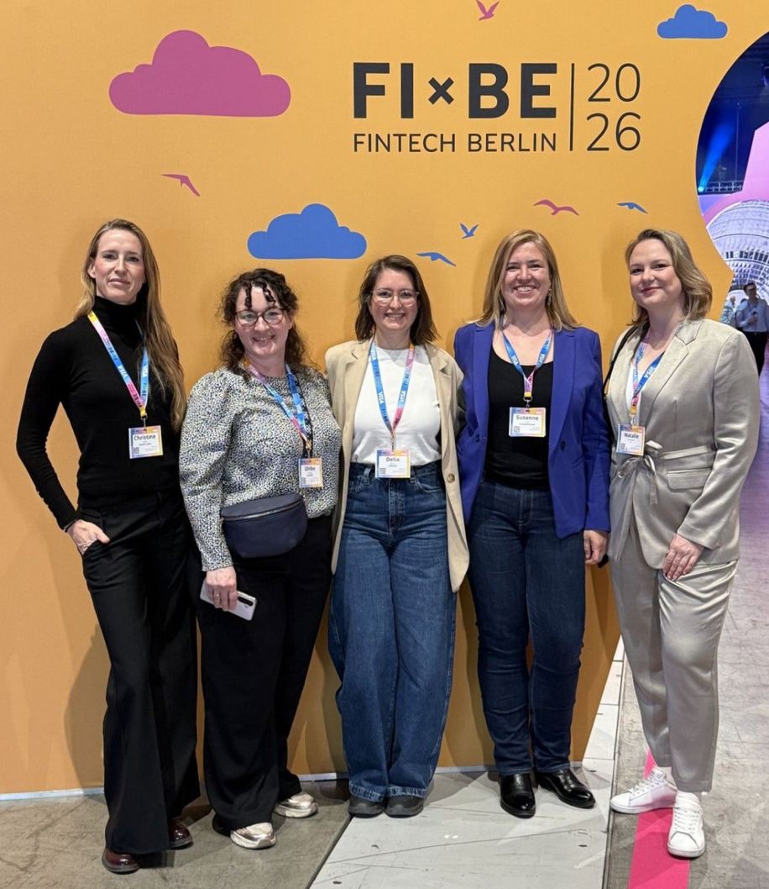
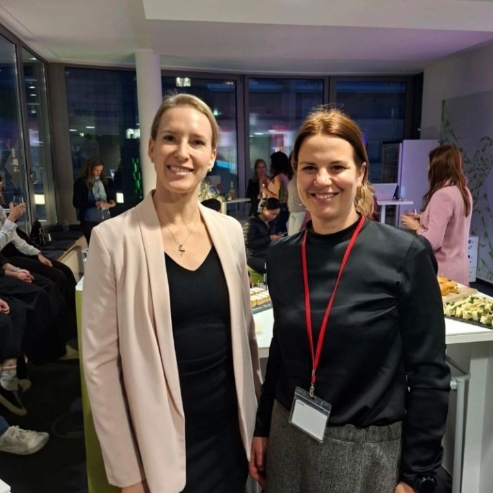
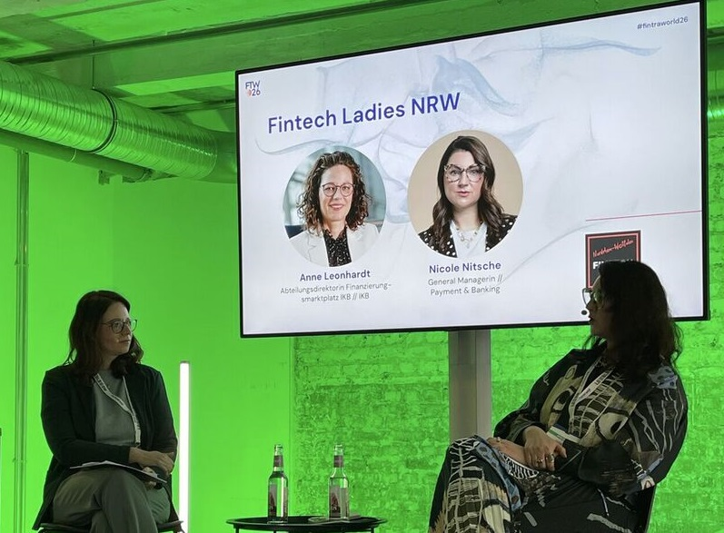
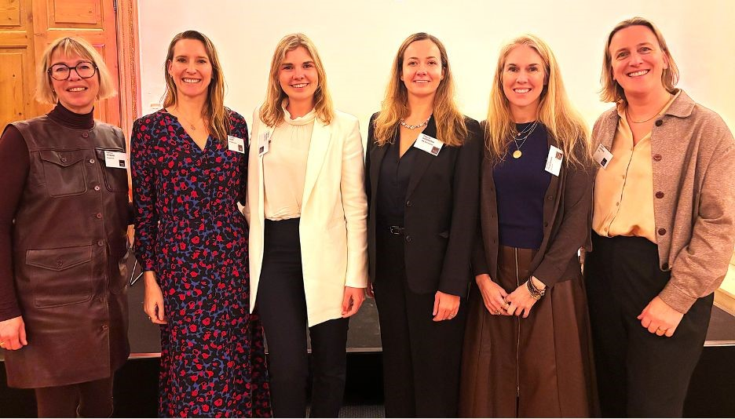

News and stories from the Fintech Ladies community

Fintech Ladies @ Fibe Berlin 2026
Our meetup "Rewrite the Script: Navigating Your Career in the Age of AI" was one for the books. We came together to talk about AI anxiety, career confidence, and what it really means to grow in a tech-driven financial world. Young professionals asked sharp, honest, brave questions — and the discussion ran almost as long as the session itself. A huge thank you to our panelist Elly G. and host Ulrike Czekay, and to all the Fintech Ladies who made the afternoon unforgettable. Grateful to the FIBE team for the platform — we are already looking forward to next year!

FTL Berlin @ Sopra Steria
We had the pleasure of hosting a wonderful evening with the Fintech Ladies Berlin community at Sopra Steria. The event brought together professionals from across fintech, compliance, and tech to explore the future of transaction monitoring through the lens of AI. We gained valuable insights into AGENTS.inc and the application of AI in transaction monitoring — alongside great networking, excellent food and drinks. Special thanks to Henrik Pfeiffer, Larissa Franze, and Dr. Tatjana Samsonowa-Denef for sharing their expertise, and to everyone who joined us!

FTL NRW @ FinTraWorld26
One highlight of FinTraWorld 2026 was our get-together and the stage conversation with Nicole Nitsche and Anne Leonhardt, Fintech Ladies Ambassador for NRW. We spoke openly about non-linear career paths into finance and how thematic pivots can bring valuable new perspectives. Leadership often starts long before you manage a team — through ownership, responsibility, and supporting colleagues. A big welcome to all new Fintech Ladies who joined our community at the event! Thank you to Thorsten Hahn, Fiona Gleim, Maria Scherban and the entire BANKINGCLUB team.

FTL Brussels @ Swift
On January 26th we had a very successful event at Swift Brussels! We are grateful to our host for the warm welcome and the amazing catering. During our discussions on Building Resilient Futures, one theme consistently emerged: despite the rapid evolution of emerging technologies, it is trust that gives us confidence. As Astrid Coppens from Swift clearly stated: "Be the pilot, not the passenger." A big thank-you to all panel speakers: Nadine van Son, Patrycja Wisniewska, Jennifer McLaughlin, Astrid Coppens, Patricia Boydens, Cheri F. McGuire and our founder Christine Kiefer.